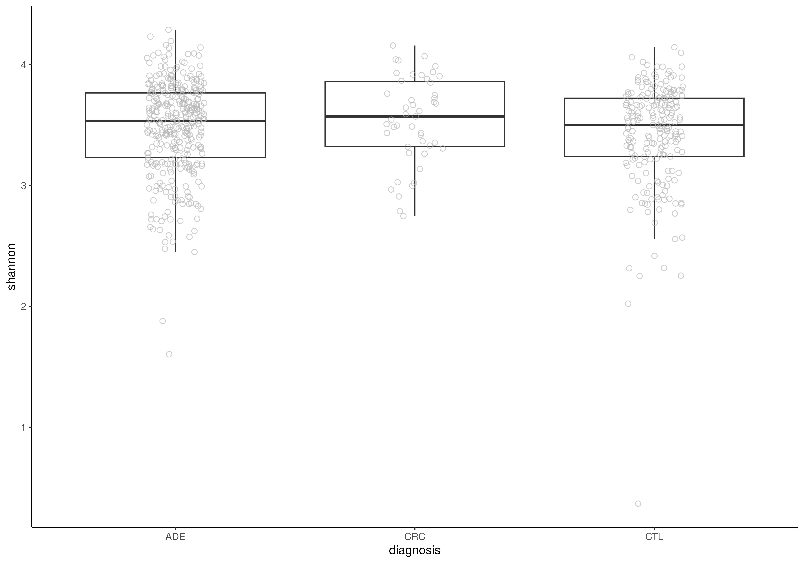
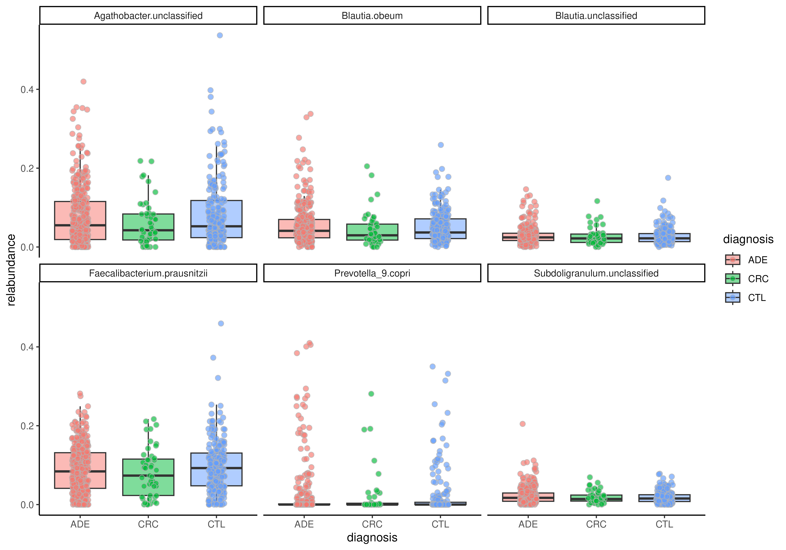
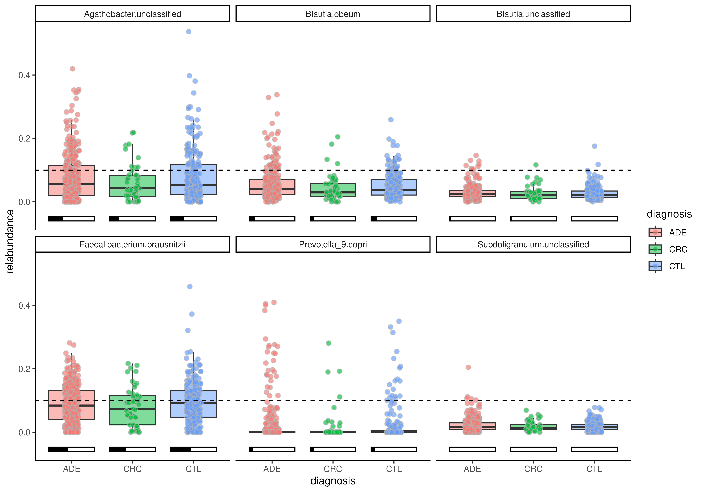
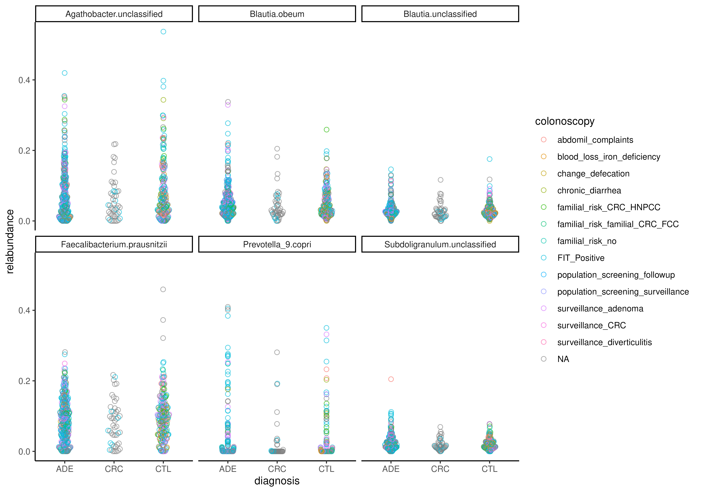
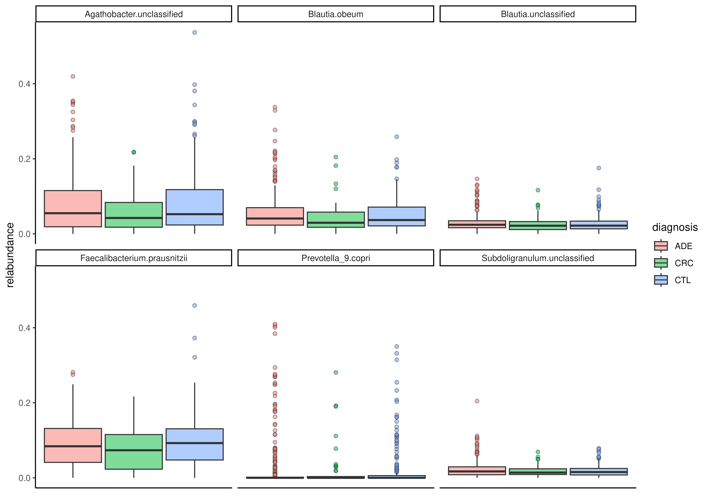

assay, rowData or colData.R/AllGenerics.R, R/plotBoxplot.R
plotBoxplot.RdThis methods visualizes abundances or variables from rowData or
colData.
plotBoxplot(object, ...)
# S4 method for class 'SummarizedExperiment'
plotBoxplot(
object,
assay.type = NULL,
row.var = NULL,
col.var = NULL,
x = NULL,
features = NULL,
group.by = NULL,
...
)a
SummarizedExperiment
object.
Additional parameters for plotting.
point.offset: Character scalar. Utilized method
for offsetting points. The available options include:
"center", "compactswarm", "hex", "square",
"swarm"
(see beeswarm::beeswarm() for details),
"frowney", "maxout", "minout", "pseudorandom",
"quasirandom", "smiley", "tukey", "tukeyDense"
(see vipor::offsetSingleGroup()
for details), "jitter", and "none",
If "none", ofsetting is not applied. (Default: "jitter")
colour.by: NULL or character scalar. Specifies a
variable from colData(x) or rowData(x) which is used to
colour observations. (Default: NULL)
fill.by: NULL or character scalar. Specifies a
variable from colData(x) or rowData(x) which is used to
colour observations. (Default: NULL)
size.by: NULL or character scalar. Specifies a
variable from colData(x) or rowData(x) which is used to scale
observation points. (Default: NULL)
shape.by: NULL or character scalar. Specifies a
variable from colData(x) or rowData(x) which is used to shape
observation points. (Default: NULL)
facet.by: NULL or character scalar. Specifies a
variable from colData(x) or rowData(x) which is used to facet
or group observations. (Default: NULL)
pair.by: NULL or character scalar. Specifies a
variable from colData(x) which is used to pair observation points.
(Default: NULL)
add.chance: Logical scalar. Whether to visualize chance
of paired observations by the color of line. (Default: FALSE)
add.box: Logical scalar. Whether to add a boxplot
layout. (Default: TRUE)
add.points: Logical scalar. Whether to add a point
layout. (Default: TRUE)
add.proportion: Logical scalar. Whether to add a
barplot layout denoting the proportion of observations above
threshold. (Default: FALSE)
add.threshold: Logical scalar. Whether to add a
threshold as horizontal line when add.proportion = TRUE is
specified. (Default: TRUE)
threshold: Numeric scalar. Specifies threshold for the
barplots. (Default: 0)
jitter.width: Numeric scalar. Width of jitter.
(Default: 0.3)
jitter.height: Numeric scalar. Height of jitter.
(Default: 0)
dodge.width: Numeric scalar. Width of dodge. How far
apart the groups are plotted? (Default: 0)
beeswarm.corral: Character scalar. Beeswarm's "corral"
method. Fed to function beeswarm::beeswarm().
(Default: "none")
scales: Character scalar. Adjust scales of facets.
(Default: "fixed")
box.alpha: Numeric scalar. Transparency of the boxplot
layer. (Default: 0.5)
point.alpha: Numeric scalar. Transparency of the point
layer. (Default: 0.65)
line.alpha: Numeric scalar. Transparency of the line
layer. (Default: 0.5)
point.shape: Numeric scalar. Shape of points.
(Default: 21)
point.size: Numeric scalar. Size of points.
(Default: 2)
point.colour: Character scalar. Colour of points.
(Default: "grey70")
linetype: Numeric scalar. Type of lines.
(Default: 1)
linewidth: Numeric scalar. Width of lines.
(Default: 1)
line.colour: Character scalar. Colour of lines.
(Default: "grey70")
box.width: Numeric scalar. Width of boxes.
(Default: 0.75)
bar.width: Numeric scalar. Width of proportion bars.
By default, it is calculated based so that the width matches with the
width of boxes.
NULL or character scalar. Specifies the
abundace table to plot. (Default: NULL)
NULL or character scalar. Specifies a variable
from rowData(x) to visualize. (Default: NULL)
NULL or character scalar Specifies a variable
from colData(x) to visualize. (Default: NULL)
NULL or character vector. Specifies a variable
from colData(x) or rowData(x) to visualize in x axis.
(Default: NULL)
NULL or character vector. If assay.type
is specified, this specifies rows to visualize in different facets. If
NULL, whole data is visualized as a whole. (Default: NULL)
NULL or character vector. Specifies a variable
from colData(x) or rowData(x) to group observations.
(Default: NULL)
A ggplot2 object.
A box plot is standard visualization technique to compare numeric values,
such as abundance, between categorical values, such as sample groups.
plotBoxplot() streamlines creation of box plots, and it offers
multiple options for visualization.
data("Tito2024QMP")
tse <- Tito2024QMP
tse <- transformAssay(tse, method = "relabundance")
tse <- addAlpha(tse, index = "shannon")
# Visualize alpha diversity
plotBoxplot(tse, col.var = "shannon", x = "diagnosis")

# Visualize relative abundance of top features
tse <- tse[getTop(tse, 6), ]
plotBoxplot(
tse, assay.type = "relabundance",
x = "diagnosis", fill.by = "diagnosis",
features = rownames(tse), facet.by = "rownames"
)

# Add proportion bar
plotBoxplot(
tse, assay.type = "relabundance",
x = "diagnosis", fill.by = "diagnosis",
features = rownames(tse), facet.by = "rownames",
add.proportion = TRUE, threshold = 0.1
)

# Visualize only with beeswarm
plotBoxplot(
tse, assay.type = "relabundance",
x = "diagnosis", group.by = "diagnosis",
colour.by = "colonoscopy",
features = rownames(tse), facet.by = "rownames",
point.offset = "swarm", add.box = FALSE
)

# Do not add points
plotBoxplot(
tse, assay.type = "relabundance",
fill.by = "diagnosis",
features = rownames(tse), facet.by = "rownames",
add.points = FALSE
)

if (FALSE) { # \dontrun{
library(microbiomeDataSets)
mae <- microbiomeDataSets::peerj32()
tse <- getWithColData(mae, 1)
tse[["time_point"]] <- as.character(tse[["time"]])
# Create a plot showing chance between time points in abundance of
# Akkermansia
plotBoxplot(
tse, x = "time_point", assay.type = "counts", fill.by = "group",
features = "Akkermansia", pair.by = "subject",
add.chance = TRUE, scales = "free"
)
} # }